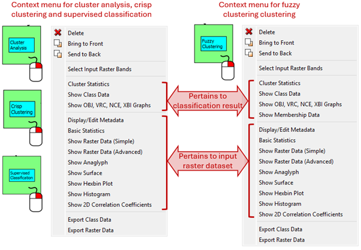
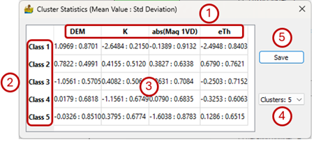
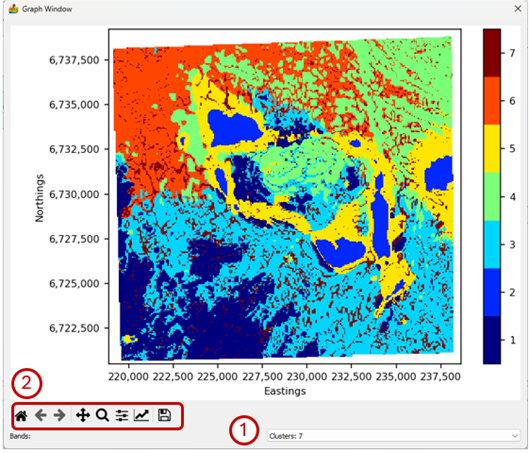
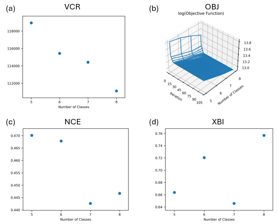
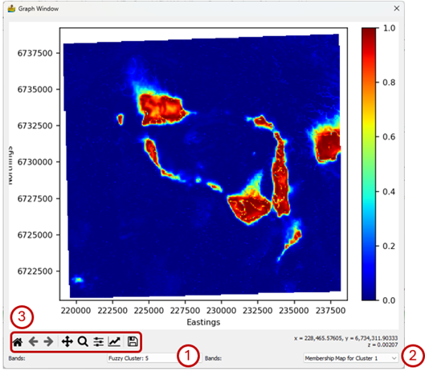
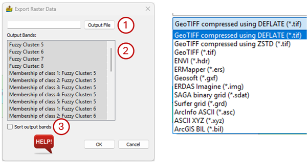

Classification: Context Menu¶
Context menus are available for classification modules after they have been executed. These are accessed by right-clicking on the green classification module. If the module has not been run it will be blue and the context menu will give you the option to select the input raster bands. Cluster Analysis, Crisp Clustering and Supervised Classification have the same context menu while Fuzzy Clustering has a slightly different context menu. The context menu for Image Segmentation is identical to the raster data context menu.
Classification context menus contain the raster data context menu that acts on the input raster datasets. Only the items applicable to the classification results will be discussed here.

Cluster Statistics¶
Cluster statistics show the central value of each cluster with respect to each band of the input data, as well as the associated standard deviation. The interface has the following features:
The bands of the input raster dataset form the column headings.
The classes resulting from the classification form the rows of the table.
Each cell contains the mean value and standard deviation of the class with respect to the input data band in the format Mean Value : Standard Deviation.
If the classification was done for a range of clusters, the user can select the number of clusters for which the statistics must be displayed.
Save – The table can be stored as a CSV file. If the classification was done for a range of clusters the statistics for all the cluster numbers are stored.

Show Class Data¶
This provides a quick graphical representation of the output of the cluster analysis
The options on this interface are:
Bands – If the classification was done for a range of clusters the results for each number of clusters can be selected via the dropdown menu.
Standard image display setting that allows the user to zoom into specific areas of the image, move the zoomed in area around, return to the full image, save the image, etc.

Show OBJ, VRC, NCE, XBI Graphs¶
This information relates to comparisons between cluster analysis runs over different numbers of classes. If, for example, a crisp cluster run has a minimum of 5 and maximum of 7 classes, then three solutions are produced; one with 5, one with 6 and one with 7 classes. This context menu displays information in graphical form which can assist in determining the optimal number of classes present in the data.
One graph is produced for Cluster Analysis, Crisp Clustering and Fuzzy Clustering results:
Variance Ratio Criterion (VRC) as a 2D graph. This was proposed by Calinski and Harabasz (1974) and is also called the Calinski–Harabasz index (CHI). In simple terms it takes the ratio of the distance between clusters and the distance between a point in a cluster and the cluster centre. The latter is an indication of dispersion within the cluster. Ideally the clusters must be well separated (large numerator) and compact (small denominator) which means the maximum VCR corresponds to the best number of clusters.
The following additional graphs are produced for Fuzzy Clustering results:
Objective Function (OBJ) as a 3D graph that shows the number of iterations to convergence to a solution for each number of clusters.
Normalized Class Entropy (NCE) as a 2D graph. This gives an indication of the degree of disorder in the system, with smaller values for separated clusters and large values for overlapping clusters (Paasche et al., 2006). The minimum NCE will therefore point to the optimal number of classes.
Xie-Beni Index (XBI) as a 2D graph. The index calculates the ratio between the objective function and the distance between clusters. The minimum XBI corresponds to the optimal number of classes (Paasche and Eberle, 2009).

Show Membership Data (Fuzzy Only)¶
The results of fuzzy clustering contain information on the degree of membership of data points to a specific class. Higher values show higher degrees of membership to a specific class.
The interface has the following options:
Number of Clusters – If the classification was done for a range of clusters the results for each number of clusters can be selected via the dropdown menu.
Membership – The membership of data to each class. Higher values indicate that the data belongs to a certain class with a high degree of certainty. Data corresponding to medium values may belong to a class but may also be part of another class. Low values mean the data definitely does not belong to the class.
Standard image display setting that allows the user to zoom into specific areas of the image, move the zoomed in area around, return to the full image, save the image, etc.

Export Class Data¶
This exports the class data into a variety of raster formats, including ENVI, ER Mapper, GeoTIFF, Geosoft GXF and Surfer. In most cases the GDAL library was used.
The user has the following options:
Select the locality, filename and format of the output file.
Select the bands to export by clicking on them. Bands highlighted in grey will be exported. A band can be deselected by clicking on it a second time.
The output bands can be sorted by band name.
